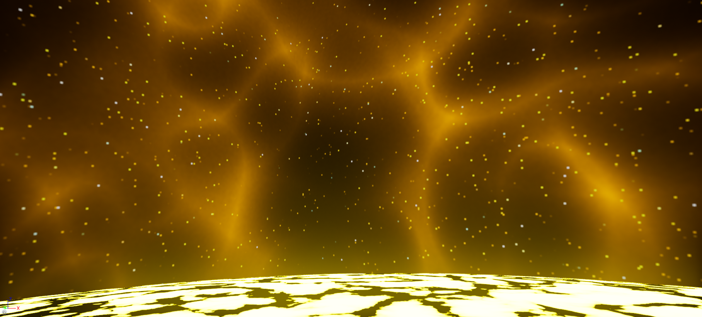
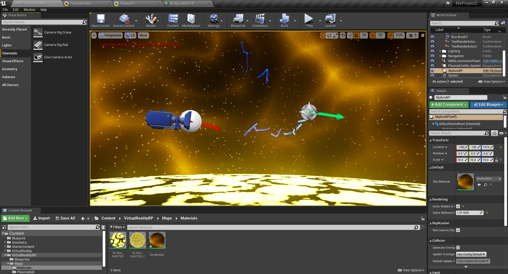
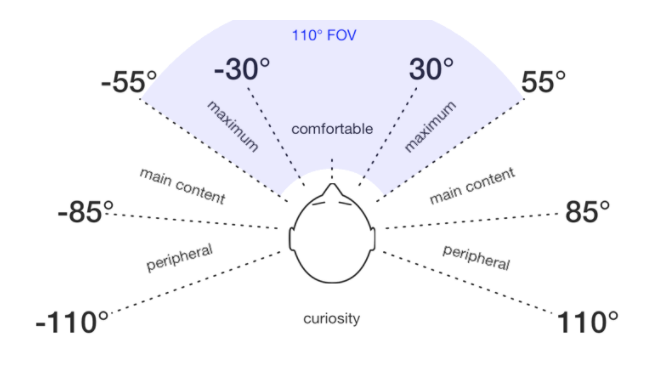

This has been the most ambitious project of the ones I chose to undertake this semester. I ended up delving into Unreal Engine 4 and creating an environment where the film could take place. For the time being, I have created the map and have started to animate the cutscenes. This required basic knowledge of 3D, material creation as well as manipulation of particle effects to create the 'sun-dwellers'. I ended up making small streaks of plasma to represent the creatures until I am able to create more advanced skeletons and animate them effectively. Here is a screenshot of how the scene looks from 1st person as well as how the project currently looks like (the camera being the VR starting position and the white ball being the particle effect).
  (Ahir, 2019)
The image above demonstrates the best position for content in front of someone. When wearing a VR headset you are given a lot of freedom. Too much freedom sometimes, this can cause the user to potentially miss out if the important content is placed in their peripheral vision. On the plus side, whatever is behind a user wearing a VR headset becomes very significant when a sound is played to alert them. If used effectively, sound and proper composition of ones surrounds can lead to a natural yet exciting experience.